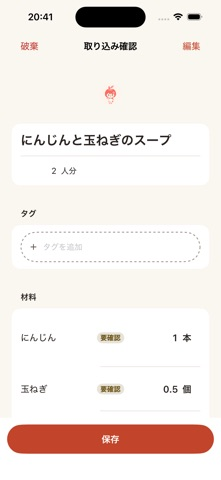
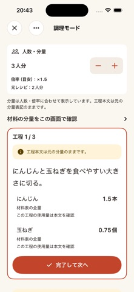
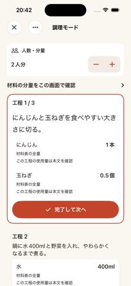

01 / SAVE
取り込んで、確かめて。
自分のレシピ帳に。
対応するリンクは共有メニューやURL入力から、ほかのレシピは材料と手順のスクリーンショットから取り込めます。材料・分量・手順を確認し、必要に応じて編集して保存できます。対応先はアプリ内の「対応サイト」で確認できます。
読み取りには欠落や誤りがある場合があります。保存前に内容をご確認ください。
YOUR RECIPES, EVERYDAY COOKING
見つけたレシピを、自分のレシピ帳に。
材料・分量・手順を確認して保存し、
人数に合わせた分量表示で、料理へ。
無料で5件まで保存 · iOS 26.0以降

HOW IT WORKS
同じスープの画面で、repipiの使い方をご紹介します。
01 / SAVE
対応するリンクは共有メニューやURL入力から、ほかのレシピは材料と手順のスクリーンショットから取り込めます。材料・分量・手順を確認し、必要に応じて編集して保存できます。対応先はアプリ内の「対応サイト」で確認できます。
読み取りには欠落や誤りがある場合があります。保存前に内容をご確認ください。

02 / ADJUST
2人分のレシピを、3人分へ。人数を変えると、補助表示の数値分量を換算します。
工程本文の数字は元のままです。本文の分量まで自動で書き換える機能ではありません。

03 / COOK
調理モードでは、工程ごとに材料と分量を参照できます。確認できたら、次の工程へ。
この画面は2人分の操作例です。上の人数変更画面からの連続撮影ではありません。
画面：2026年11月18日に取得したApp Store掲載画像。配布版と表示が異なる場合があります。
KEEP IT USEFUL
START SMALL
無料で5件までレシピを保存できます。
もっと保存したくなったら、買い切り1回で無制限に。
月額料金はありません。
購入金額と最新の条件はApp Store・アプリ内でご確認ください。
iOS 26.0以降が必要です。AI機能には、対応端末でApple Intelligenceが有効になり、モデルが利用できる状態が必要です。
AIが使えない場合も、対応レシピサイトのURL取り込み、スクショ取り込み、編集・保存・検索・調理モードを利用できます。タイトルや手順を手で補う必要がある場合があります。
詳しくはサポートへ ↗ENGLISH
Repipi imports recipes from supported links or screenshots. Review ingredients, amounts, and steps before saving them on your device.
Send a link using the Share menu or paste a URL in the app. Features using AI require a supported device with the Apple Intelligence model available. Numeric amounts in supporting displays can be scaled for servings; numbers in the original step text remain unchanged.